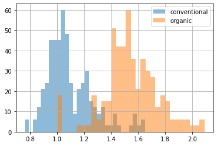
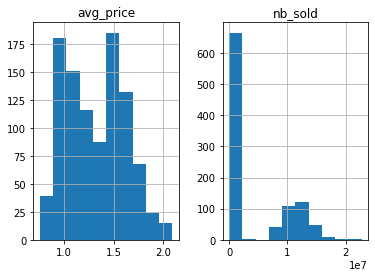
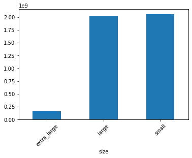
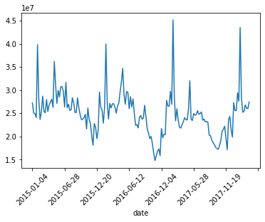
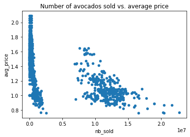
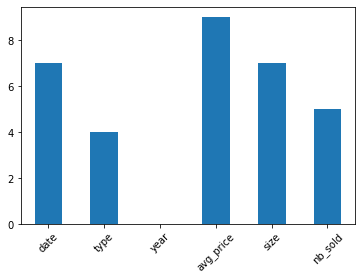
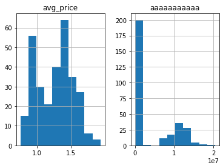
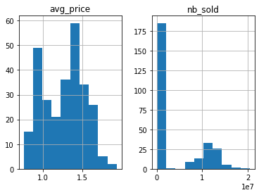
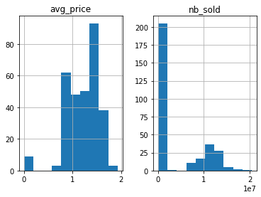

import pandas as pd
import numpy as np
1. Transforming DataFrames
1.1 Introducing DataFrames
Inspecting a DataFrame
When you get a new DataFrame to work with, the first thing you need to do is explore it and see what it contains. pandas has several methods for this.
head method (.head()) returns the first few rows of the DataFrame.
# create a DataFrame
cate = ["Py", "R", "Matlab" ]
df = pd.DataFrame(
{
"a": np.random.randn(1000),
"b": np.random.randn(1000),
"c": np.random.randn(1000),
"d": np.random.randn(1000),
"e": [cate[np.random.randint(0,3)] for i in range(1000)]
}
)
df.head()
| a | b | c | d | e | |
|---|---|---|---|---|---|
| 0 | -1.172136 | 2.051149 | 0.873085 | -0.282962 | R |
| 1 | 0.170465 | -0.478174 | 0.064987 | -0.430026 | Py |
| 2 | 2.118497 | 0.764664 | 0.536967 | -0.082693 | Matlab |
| 3 | -1.723871 | 0.640578 | -0.229919 | 0.991052 | Py |
| 4 | -1.076573 | 0.357888 | -1.142489 | 0.934957 | R |
The info method (.info()) displays the names of columns, the data types they contain, and whether they have any missing values.
df.info()
<class 'pandas.core.frame.DataFrame'>
RangeIndex: 1000 entries, 0 to 999
Data columns (total 5 columns):
# Column Non-Null Count Dtype
--- ------ -------------- -----
0 a 1000 non-null float64
1 b 1000 non-null float64
2 c 1000 non-null float64
3 d 1000 non-null float64
4 e 1000 non-null object
dtypes: float64(4), object(1)
memory usage: 39.2+ KB
A DataFrame’s shape attribute (.shape) contains a tuple that holds the number of rows followed by the number of columns.
Notice: shape is an attribute instead of a method, you write it without parentheses.
df.shape
(1000, 5)
The describe method (.describe()) computes some summary statistics for numerical columns, like mean and median. “count” is the number of non-missing values in each column.
df.describe()
| a | b | c | d | |
|---|---|---|---|---|
| count | 1000.000000 | 1000.000000 | 1000.000000 | 1000.000000 |
| mean | -0.000344 | 0.002620 | 0.000161 | -0.017356 |
| std | 0.994638 | 0.997447 | 1.005753 | 0.988075 |
| min | -3.625356 | -3.868120 | -3.627746 | -4.127387 |
| 25% | -0.657855 | -0.654089 | -0.684824 | -0.687108 |
| 50% | 0.026767 | 0.023429 | -0.005229 | -0.002055 |
| 75% | 0.649783 | 0.667233 | 0.696990 | 0.651392 |
| max | 2.766836 | 3.202574 | 3.020571 | 3.019016 |
DataFrames consist of three different components, accessible using attributes. The values attribute (.value), as you might expect, contains the data values in a 2-dimensional NumPy array.
print(df.values)
[[-1.1721357672501687 2.051149175001613 0.8730845444425417
-0.2829622927958 'R']
[0.17046505093485348 -0.47817377411751383 0.0649866820973667
-0.4300264491808214 'Py']
[2.1184968617007476 0.7646639337499493 0.5369672045498988
-0.08269255233146043 'Matlab']
...
[0.426522629732619 0.4345608969061307 -0.1426825637011513
-0.10519507894863925 'Matlab']
[-0.6569331318513875 -0.856828242229444 -0.932854764371868
-0.900709374857083 'Matlab']
[0.9495204746243522 1.0195373445242275 -1.0270316426040502
0.3038939091613208 'Matlab']]
The other two components of a DataFrame are labels for columns and rows. The columns attribute (.columns) contains column names, and the index attribute (.index) contains row numbers or row names.
Be careful, since row labels are stored in dot-index, not in dot-rows. Notice that these are Index objects.
print(df.columns)
print(df.index)
Index(['a', 'b', 'c', 'd', 'e'], dtype='object')
RangeIndex(start=0, stop=1000, step=1)
1.2 Sorting and subsetting
sorting
The first thing you can do is change the order of the rows by sorting them so that the most interesting data is at the top of the DataFrame. You can sort rows using the sort_values method :
sort_values(
by,
axis=0,
ascending=True,
inplace=False,
)
Setting the ascending argument to False will sort the data from largest to smallest. Setting argument inplace=True will change the DataFrame perpetually when Applying sort_values method on it.
df.sort_values(
by= "b",
ascending=False,
inplace=True
)
df.head()
| a | b | c | d | e | |
|---|---|---|---|---|---|
| 398 | -0.431660 | 3.202574 | -0.314291 | -0.186943 | Py |
| 825 | -0.159995 | 2.943859 | -1.034372 | 0.252384 | Matlab |
| 531 | 0.650551 | 2.872788 | -0.193481 | 0.267928 | Matlab |
| 387 | 0.030544 | 2.829655 | -1.549369 | 0.752019 | R |
| 214 | -0.959370 | 2.672384 | -1.030693 | -2.267169 | R |
We can sort by multiple variables by passing a list of column names to argument by. To change the direction values are sorted in, pass a list to the ascending argument to specify which direction sorting should be done for each variable.
df.sort_values(
by=["c", "d"],
ascending=[True, False]
).head()
| a | b | c | d | e | |
|---|---|---|---|---|---|
| 363 | -0.768857 | 0.027611 | -3.627746 | 1.432825 | R |
| 976 | 0.385393 | -1.643112 | -3.006845 | 0.305332 | Matlab |
| 877 | 0.708099 | -0.842795 | -2.967742 | -0.292479 | Matlab |
| 985 | 0.868211 | 0.665344 | -2.858335 | 1.316567 | R |
| 500 | -2.097605 | -0.659382 | -2.819653 | 0.071752 | R |
Here, we sort first by “c” from largest to smallest, then by “d” from smallest to largest.
subsetting by column
We can subset column by two ways:
- the name of the DataFrame, followed by square brackets with a column name inside.
- the name of the DataFrame, followed by a dot with a column name.
print(df["a"].head())
print(df.a.head())
398 -0.431660
825 -0.159995
531 0.650551
387 0.030544
214 -0.959370
Name: a, dtype: float64
398 -0.431660
825 -0.159995
531 0.650551
387 0.030544
214 -0.959370
Name: a, dtype: float64
To select multiple columns, you need two pairs of square brackets.
df[["a", "b"]].head()
| a | b | |
|---|---|---|
| 398 | -0.431660 | 3.202574 |
| 825 | -0.159995 | 2.943859 |
| 531 | 0.650551 | 2.872788 |
| 387 | 0.030544 | 2.829655 |
| 214 | -0.959370 | 2.672384 |
In this code, the inner and outer square brackets are performing different tasks. The outer square brackets are responsible for subsetting the DataFrame, and the inner square brackets are creating a list of column names to subset. This means you could provide a separate list of column names as a variable and then use that list to perform the same subsetting.
subset = ["a", "b"]
df[subset].head()
| a | b | |
|---|---|---|
| 398 | -0.431660 | 3.202574 |
| 825 | -0.159995 | 2.943859 |
| 531 | 0.650551 | 2.872788 |
| 387 | 0.030544 | 2.829655 |
| 214 | -0.959370 | 2.672384 |
subsetting by row
There are lots of different ways to subset rows. The most common way to do this is by creating a logical condition to filter against, which is called mask Filter.
df[df.a > 0].head()
| a | b | c | d | e | |
|---|---|---|---|---|---|
| 531 | 0.650551 | 2.872788 | -0.193481 | 0.267928 | Matlab |
| 387 | 0.030544 | 2.829655 | -1.549369 | 0.752019 | R |
| 845 | 1.108394 | 2.650719 | -0.657826 | 0.442141 | Matlab |
| 968 | 0.306394 | 2.610860 | -0.660540 | 0.341361 | R |
| 445 | 1.375566 | 2.547500 | -0.977935 | -0.600358 | R |
To subset the rows that meet multiple conditions, you can combine conditions using logical operators, such as the &, |, !, etc.
df[
(df.a > df.b) &
(df.c > df.d)
].head()
| a | b | c | d | e | |
|---|---|---|---|---|---|
| 685 | 2.005725 | 1.808596 | 0.242737 | -0.707237 | Py |
| 615 | 1.821178 | 1.712322 | -0.414216 | -1.859492 | Matlab |
| 962 | 2.475041 | 1.586639 | 0.993200 | -2.121185 | R |
| 566 | 2.409229 | 1.359745 | 1.166001 | 0.051350 | Matlab |
| 463 | 1.590993 | 1.343280 | 1.289821 | 0.690417 | R |
If you want to filter on multiple values of a categorical variable, the easiest way is to use the isin method (.isin()) This takes in a list of values to filter for.
df.e.isin(["Py", "R"]).head()
398 True
825 False
531 False
387 True
214 True
Name: e, dtype: bool
df[
df.e.isin(["Py", "R"])
].head()
| a | b | c | d | e | |
|---|---|---|---|---|---|
| 398 | -0.431660 | 3.202574 | -0.314291 | -0.186943 | Py |
| 387 | 0.030544 | 2.829655 | -1.549369 | 0.752019 | R |
| 214 | -0.959370 | 2.672384 | -1.030693 | -2.267169 | R |
| 968 | 0.306394 | 2.610860 | -0.660540 | 0.341361 | R |
| 487 | -1.026339 | 2.588706 | 0.388510 | -1.321296 | R |
1.3 New columns
On the left-hand side of the equals, we use square brackets with the name of the new column we want to create. On the right-hand side, we have the calculation. Notice that both the existing column and the new column we just created are in the DataFrame.
df["a*b/c"] = (df["a"] * df["b"]) / df["c"]
df.head()
| a | b | c | d | e | a*b/c | |
|---|---|---|---|---|---|---|
| 398 | -0.431660 | 3.202574 | -0.314291 | -0.186943 | Py | 4.398544 |
| 825 | -0.159995 | 2.943859 | -1.034372 | 0.252384 | Matlab | 0.455352 |
| 531 | 0.650551 | 2.872788 | -0.193481 | 0.267928 | Matlab | -9.659306 |
| 387 | 0.030544 | 2.829655 | -1.549369 | 0.752019 | R | -0.055783 |
| 214 | -0.959370 | 2.672384 | -1.030693 | -2.267169 | R | 2.487455 |
The real power of pandas comes in when you combine all the skills you’ve learned so far. for example.
- First, we select all cases that a’s value is grater than 0;
- Secondly, we sort the column a*b/c from the largest to the smallest;
- Finally, we select the columns we’re interested in:
df[df.a > 0].sort_values(by="a*b/c", ascending=False)[["d", "a*b/c"]].head()
| d | a*b/c | |
|---|---|---|
| 5 | -1.220885 | 109.336611 |
| 360 | -0.417578 | 79.057749 |
| 217 | -0.054230 | 38.692726 |
| 698 | 0.511448 | 34.976581 |
| 749 | -0.721838 | 28.953417 |
2. Aggregating DataFrames
2.1 Summary statistics
Summarizing numerical data
One of the most common summary statistics for numeric data is the mean You can calculate the mean of a column by selecting the column with square brackets and calling .mean():
df["a"].mean()
-0.0003441862571331211
There are lots of other summary statistics that you can compute on columns, like .median() and .mode(), .min() and .max(), and .var() and .std() . You can also take .sum() and calculate .quantile(). You can also get summary statistics for date columns.
# Crate the datetime colum
rng = np.random.randint
df["date"] = [
"{}-{}-{}".format(rng(1950, 2023), rng(1, 13), rng(1, 30)) for i in range(1000)
]
print(
df.date.max(),
"\n",
df.date.min()
)
2022-8-21
1950-1-4
.agg() method
The aggregate, or agg method allows you to compute custom summary statistics. Here, we create a function called pct30 that computes the thirtieth percentile of a DataFrame column.
def pct30(col):
return col.quantile(0.3)
Now we can subset the column a and call .agg(), passing in the name of our function, pct30. It gives us the thirtieth percentile of the datas.
df["a"].agg(pct30)
-0.5187773240903909
agg can also be used on more than one column. By selecting the columns a and b before calling agg, we get the thirtieth percentile for both columns.
df[["a", "b"]].agg(pct30)
a -0.518777
b -0.492294
dtype: float64
We can also use agg to get multiple summary statistics at once, by passing a list of functions into agg:
df[["a", "b"]].agg([sum, np.mean, np.median, max, min, pct30])
| a | b | |
|---|---|---|
| sum | -0.344186 | 2.619994 |
| mean | -0.000344 | 0.002620 |
| median | 0.026767 | 0.023429 |
| max | 2.766836 | 3.202574 |
| min | -3.625356 | -3.868120 |
| pct30 | -0.518777 | -0.492294 |
Cumulative statistics
pandas also has methods for other cumulative statistics, such as the cumulative maximum (.cumsum()), cumulative minimum (.cummin()), and the cumulative product (.cumprod()). These all return an entire column of a DataFrame, rather than a single number.
df["a"].cumsum
<bound method Series.cumsum of 398 -0.431660
825 -0.159995
531 0.650551
387 0.030544
214 -0.959370
...
603 -0.467711
492 1.587120
6 -0.269957
665 1.180349
207 -0.833932
Name: a, Length: 1000, dtype: float64>
2.2 Counting
Dropping duplicate items
We can do this using the drop_duplicates method (.drop_duplicates()). It takes an argument, subset, which is the column we want to find our duplicates based on. we now crate a DataFrame.
lang = ["Py", "R", "Matlab", "Julia"]
vers = ["1", "2", "3"]
uslc = ["US", "CN", "DE"]
rng = np.random.randint
df2 = pd.DataFrame(
{
"lang": [lang[rng(0, len(lang))] for i in range(2000)],
"vers": [vers[rng(0, len(vers))] for i in range(2000)],
"uslc": [uslc[rng(0, len(uslc))] for i in range(2000)],
"hour": [rng(100, 1000) for i in range(2000)]
}
)
df2.head()
| lang | vers | uslc | hour | |
|---|---|---|---|---|
| 0 | R | 1 | DE | 386 |
| 1 | R | 2 | US | 629 |
| 2 | R | 2 | US | 415 |
| 3 | Julia | 3 | CN | 992 |
| 4 | Py | 1 | US | 721 |
drop the duplicate language items:
df2.drop_duplicates(subset="lang")
| lang | vers | uslc | hour | |
|---|---|---|---|---|
| 0 | Py | 2 | CN | 362 |
| 1 | Matlab | 2 | US | 116 |
| 2 | Julia | 2 | US | 996 |
| 8 | R | 3 | US | 211 |
We found that this would remove all other vers and uslc of each lang.
Because we often have two different items with the same name (e.g. Py 2 and Py 3, which we want to take apart), we’ll need to consider more columns than just one when dropping duplicates. To base our duplicate dropping on multiple columns, we can pass a list of column names to the subset argument.
If we want to see complete information about lang and vers:
df2.drop_duplicates(subset=["lang", "vers"]).sort_values(by=["lang", "vers"])
| lang | vers | uslc | hour | |
|---|---|---|---|---|
| 11 | Julia | 1 | DE | 239 |
| 2 | Julia | 2 | US | 996 |
| 24 | Julia | 3 | CN | 958 |
| 5 | Matlab | 1 | CN | 295 |
| 1 | Matlab | 2 | US | 116 |
| 3 | Matlab | 3 | US | 392 |
| 14 | Py | 1 | CN | 712 |
| 0 | Py | 2 | CN | 362 |
| 4 | Py | 3 | US | 136 |
| 9 | R | 1 | CN | 808 |
| 36 | R | 2 | US | 742 |
| 8 | R | 3 | US | 211 |
value counts
when finish droping, we can start counting. To count the elements of some column, we’ll subset the column from the DataFrame and use the value_counts method. We can also use the sort argument to get the breeds with the biggest counts on top.
df2.uslc.value_counts(sort=True)
CN 701
US 674
DE 625
Name: uslc, dtype: int64
The normalize argument can be used to turn the counts into proportions of the total. 25% of the dogs that go to this vet are Labradors.
df2.lang.value_counts(sort=True, normalize=True)
Matlab 0.2635
Julia 0.2525
Py 0.2505
R 0.2335
Name: lang, dtype: float64
2.3 Grouped summary statistics
While computing summary statistics of entire columns may be useful, you can gain many insights from summaries of individual groups. That’s where the groupby method comes in, we can firstly drop the duplicated rows of the column, and then subset rows from DataFrame manually, and take the mean of each. like :
df[df["col1"] == "cate1"]["col2"].mean()
df[df["col1"] == "cate2"]["col2"].mean()
df[df["col1"] == "cate3"]["col2"].mean()
...
But that’s a lot of work, that’s where the groupby method (.groupby()) comes in. We can group by the DataFrame just in one line of code.
df2.groupby("lang")["hour"].max()
lang
Julia 999
Matlab 999
Py 997
R 999
Name: hour, dtype: int64
Just like with ungrouped summary statistics, we can use the agg method to get multiple statistics. Here, we pass a list of functions into agg after grouping by lang, it gives us the minimum, maximum, and sum user numbers of the different language :
df2.groupby("lang")["hour"].agg([max, min, np.mean, np.median, sum])
| max | min | mean | median | sum | |
|---|---|---|---|---|---|
| lang | |||||
| Julia | 999 | 105 | 543.550308 | 528 | 264709 |
| Matlab | 999 | 102 | 576.159596 | 588 | 285199 |
| Py | 997 | 100 | 548.984762 | 555 | 288217 |
| R | 999 | 108 | 552.338742 | 543 | 272303 |
You can also group by multiple columns and calculate summary statistics
remember pass the columns names into a list, just like the syntax of agg method.
df2.groupby(["lang", "vers", "uslc"])["hour"].agg([max, min, np.mean, np.median, sum])
| max | min | mean | median | sum | |||
|---|---|---|---|---|---|---|---|
| lang | vers | uslc | |||||
| Julia | 1 | CN | 998 | 109 | 560.240000 | 522.0 | 28012 |
| DE | 999 | 130 | 583.500000 | 546.5 | 25674 | ||
| US | 929 | 184 | 553.037736 | 540.0 | 29311 | ||
| 2 | CN | 988 | 113 | 551.365385 | 548.0 | 28671 | |
| DE | 995 | 105 | 508.656250 | 434.0 | 32554 | ||
| US | 996 | 116 | 597.857143 | 610.5 | 33480 | ||
| 3 | CN | 994 | 107 | 508.303571 | 449.5 | 28465 | |
| DE | 962 | 110 | 534.296296 | 472.5 | 28852 | ||
| US | 999 | 111 | 511.896552 | 511.5 | 29690 | ||
| Matlab | 1 | CN | 991 | 153 | 526.630435 | 481.5 | 24225 |
| DE | 991 | 122 | 633.083333 | 652.5 | 30388 | ||
| US | 982 | 109 | 604.629630 | 629.0 | 32650 | ||
| 2 | CN | 995 | 105 | 589.345455 | 582.0 | 32414 | |
| DE | 999 | 111 | 561.791667 | 575.5 | 26966 | ||
| US | 998 | 102 | 543.333333 | 528.0 | 32600 | ||
| 3 | CN | 995 | 104 | 515.175439 | 526.0 | 29365 | |
| DE | 996 | 119 | 596.092308 | 632.0 | 38746 | ||
| US | 989 | 105 | 610.403226 | 662.0 | 37845 | ||
| Py | 1 | CN | 988 | 101 | 604.046875 | 661.0 | 38659 |
| DE | 979 | 100 | 472.193548 | 399.0 | 29276 | ||
| US | 977 | 113 | 544.900000 | 553.5 | 32694 | ||
| 2 | CN | 969 | 152 | 486.212766 | 491.0 | 22852 | |
| DE | 986 | 137 | 531.750000 | 502.5 | 29778 | ||
| US | 996 | 103 | 584.375000 | 624.5 | 32725 | ||
| 3 | CN | 991 | 125 | 610.118644 | 647.0 | 35997 | |
| DE | 975 | 105 | 490.274194 | 483.5 | 30397 | ||
| US | 997 | 128 | 607.440678 | 631.0 | 35839 | ||
| R | 1 | CN | 984 | 131 | 571.730159 | 542.0 | 36019 |
| DE | 967 | 134 | 555.465517 | 562.5 | 32217 | ||
| US | 999 | 109 | 505.754098 | 523.0 | 30851 | ||
| 2 | CN | 947 | 120 | 566.950820 | 572.0 | 34584 | |
| DE | 986 | 132 | 542.872340 | 496.0 | 25515 | ||
| US | 988 | 138 | 597.729167 | 627.0 | 28691 | ||
| 3 | CN | 990 | 108 | 548.288889 | 498.0 | 24673 | |
| DE | 970 | 110 | 570.150943 | 563.0 | 30218 | ||
| US | 997 | 120 | 518.157895 | 500.0 | 29535 |
Pivot tables
we grouped the df2 by lang and calculated their mean hour. We can do the same thing using the pivot_table method:
DataFrame.pivot_table(
values=None,
index=None,
columns=None,
aggfunc='mean',
fill_value=None,
margins=False,
dropna=True,
margins_name='All'
)
- The
valuesargument is the column that you want to summarize - the
indexcolumn is the column that you want to group by. - If we want a different summary statistic, we can use the
aggfuncargument and pass it a function, By default, pivot_table takes the mean value for each group.; To get multiple summary statistics at a time, we can pass a list of functions to theaggfuncargument. - To group by two variables, we can pass a second variable name into the
columnsargument.
you can set columns in a list and send it to
indexorcolumnsarguments.
df2.pivot_table(
values="hour",
index="lang",
columns=["vers", "uslc"],
)
| vers | 1 | 2 | 3 | ||||||
|---|---|---|---|---|---|---|---|---|---|
| uslc | CN | DE | US | CN | DE | US | CN | DE | US |
| lang | |||||||||
| Julia | 520.603448 | 553.153846 | 558.160714 | 566.450000 | 537.583333 | 594.666667 | 585.796296 | 560.238095 | 556.250000 |
| Matlab | 521.413043 | 567.775862 | 566.062500 | 548.824561 | 557.285714 | 542.683333 | 588.163636 | 526.254545 | 568.346154 |
| Py | 518.173077 | 548.530612 | 561.109589 | 560.666667 | 539.654545 | 572.204545 | 549.142857 | 533.725806 | 522.714286 |
| R | 471.913793 | 520.266667 | 628.714286 | 521.958333 | 497.944444 | 552.734694 | 572.145455 | 547.822581 | 525.951613 |
- Instead of having lots of missing values in our pivot table, we can have them filled in using the
fill_valueargument. - If we set the
marginsargument to True, the last row and last column of the pivot table contain the mean of all the values in the column or row, not including the missing values that were filled in with Os.
df2.pivot_table(
values="hour",
index="lang",
columns="uslc",
aggfunc=[np.mean, np.median, max, min],
margins= True
)
| mean | median | max | min | |||||||||||||
|---|---|---|---|---|---|---|---|---|---|---|---|---|---|---|---|---|
| uslc | CN | DE | US | All | CN | DE | US | All | CN | DE | US | All | CN | DE | US | All |
| lang | ||||||||||||||||
| Julia | 557.063953 | 550.365714 | 569.245283 | 558.575099 | 521.5 | 553.0 | 566.0 | 548 | 998 | 997 | 999 | 999 | 104 | 104 | 100 | 100 |
| Matlab | 554.537975 | 550.786982 | 558.037500 | 554.386037 | 563.5 | 562.0 | 567.5 | 562 | 999 | 994 | 990 | 999 | 102 | 104 | 105 | 102 |
| Py | 541.633333 | 540.060241 | 548.386598 | 543.690196 | 524.0 | 516.5 | 540.0 | 526 | 986 | 993 | 988 | 993 | 105 | 113 | 100 | 100 |
| R | 521.074534 | 523.125000 | 565.625000 | 536.142857 | 513.0 | 519.5 | 541.5 | 524 | 994 | 996 | 998 | 998 | 101 | 101 | 100 | 100 |
| All | 543.790952 | 540.986880 | 559.707281 | 548.185000 | 530.0 | 533.5 | 547.0 | 538 | 999 | 997 | 999 | 999 | 101 | 101 | 100 | 100 |
3. Slicing and Indexing DataFrames
3.1 Explicit indexes
setting index
You can move a column from the body of the DataFrame to the index. This is called “setting an index,” and it uses the set_index method (.set_index()).
df_ind = df2.set_index("lang")
df_ind.head()
| vers | uslc | hour | |
|---|---|---|---|
| lang | |||
| Julia | 1 | DE | 386 |
| Py | 2 | US | 629 |
| Julia | 2 | US | 415 |
| Py | 3 | CN | 992 |
| R | 1 | US | 721 |
To undo what you just did, you can reset the index - that is, you remove it. This is done via .reset_index().
df_reind = df_ind.reset_index()
df_reind.head()
| lang | vers | uslc | hour | |
|---|---|---|---|---|
| 0 | Julia | 1 | DE | 386 |
| 1 | Py | 2 | US | 629 |
| 2 | Julia | 2 | US | 415 |
| 3 | Py | 3 | CN | 992 |
| 4 | R | 1 | US | 721 |
reset_index has a drop argument that allows you to discard an index. Here, setting drop=True entirely removes the “lang” column.
Note that
set_Indexandreset_Indexare not inplace operations, which means df2 won’t be changed.
df_reind_d = df_ind.reset_index(drop=True)
df_reind_d.head()
| vers | uslc | hour | |
|---|---|---|---|
| 0 | 1 | DE | 386 |
| 1 | 2 | US | 629 |
| 2 | 2 | US | 415 |
| 3 | 3 | CN | 992 |
| 4 | 1 | US | 721 |
Setting indexes makes subsetting code cleaner. Consider this example of subsetting for the rows where the “lang” is Py or R.
df2["lang"] = [lang[rng(0, len(lang))] for i in range(2000)]
df2[df2.lang.isin(["Py", "R"])].head()
| lang | vers | uslc | hour | |
|---|---|---|---|---|
| 1 | Py | 2 | US | 629 |
| 3 | Py | 3 | CN | 992 |
| 4 | R | 1 | US | 721 |
| 5 | R | 3 | US | 948 |
| 6 | Py | 1 | US | 144 |
Now, look at the equivalent when the “lang” are in the index. DataFrames have a subsetting method called loc, which filters on index values. Here you simply pass the “Py” and “R” to loc as a list. Much easier!
Notice: there are two pairs of brackets.
df_ind.loc[["Py", "R"]].head()
| vers | uslc | hour | |
|---|---|---|---|
| lang | |||
| Py | 2 | US | 629 |
| Py | 3 | CN | 992 |
| Py | 1 | US | 144 |
| Py | 3 | CN | 774 |
| Py | 2 | US | 131 |
Multi-level indexes
You can include multiple columns in the index by passing a list of column names to set_index. There is an implication here that the inner level of index, in this case, “vers”, is nested inside the outer level, “lang”.
df_muti_ind = df2.set_index(["lang", "vers"])
df_muti_ind.head()
| uslc | hour | ||
|---|---|---|---|
| lang | vers | ||
| Julia | 1 | DE | 386 |
| Py | 2 | US | 629 |
| Julia | 2 | US | 415 |
| Py | 3 | CN | 992 |
| R | 1 | US | 721 |
Subset Multi-level indexes
To take a subset of rows at the outer level index, you pass a list of index values to loc.
df_muti_ind.loc[["Julia", "R"]].head()
| uslc | hour | ||
|---|---|---|---|
| lang | vers | ||
| Julia | 1 | DE | 386 |
| 2 | US | 415 | |
| 2 | US | 365 | |
| 3 | DE | 275 | |
| 3 | DE | 626 |
To subset on inner levels, you need to pass a list of tuples.
df_muti_ind.loc[
[
("R", "1"),
("R", "2"),
("Py", "3"),
]
].head()
| uslc | hour | ||
|---|---|---|---|
| lang | vers | ||
| R | 1 | US | 721 |
| 1 | CN | 939 | |
| 1 | DE | 522 | |
| 1 | US | 126 | |
| 1 | DE | 817 |
Sorting by index values
we can sort the rows of a DataFrame using sort_values. You can also sort by index values using sort_index. By default, it sorts all index levels from outer to inner, in ascending order.
You can control the sorting by passing lists to the level and ascending arguments.
df_muti_ind.sort_index(
level=["lang", "vers"],
ascending=False
).head()
| uslc | hour | ||
|---|---|---|---|
| lang | vers | ||
| R | 3 | US | 361 |
| 3 | US | 913 | |
| 3 | CN | 116 | |
| 3 | US | 224 | |
| 3 | US | 307 |
3.2 Slicing and subsetting with .loc and .iloc
Slicing is a technique for selecting consecutive elements from objects.
Slicing lists
To slice the list, you pass first and last positions separated by a colon into square brackets. Remember that Python positions start from zero, so 2 refers to the third element. Also remember that the last position is not included in the slice. If you want the slice to start from the beginning of the list, you can omit the zero.
ls = [lang[rng(0, len(lang))] for i in range(10)]
ls
['R', 'Julia', 'Matlab', 'R', 'Julia', 'R', 'Py', 'Py', 'Matlab', 'R']
ls[2:5] # the last position is not included in the slice
['Matlab', 'R', 'Julia']
Slicing by DataFrame Index
You can also slice DataFrames, but first, you need to sort the index with sort_index.
To slice rows at the outer level of an index, you call .loc[], passing the first and last values separated by a colon.
There are two differences compared to slicing lists.
- Rather than specifying row numbers, you specify index values.
- Secondly, notice that the final value is included.
df_sort_id = df_muti_ind.sort_index(
level=["lang", "vers"]
)
df_sort_id.loc["Julia": "Py"]
| uslc | hour | ||
|---|---|---|---|
| lang | vers | ||
| Julia | 1 | DE | 386 |
| 1 | US | 911 | |
| 1 | DE | 209 | |
| 1 | DE | 544 | |
| 1 | DE | 862 | |
| ... | ... | ... | ... |
| Py | 3 | US | 975 |
| 3 | CN | 324 | |
| 3 | CN | 981 | |
| 3 | DE | 198 | |
| 3 | CN | 438 |
1476 rows × 2 columns
The correct approach to slicing at inner index levels is to pass the first and last positions as tuples.
df_sort_id.loc[
("Julia", "1"):
("Julia", "2")
]
| uslc | hour | ||
|---|---|---|---|
| lang | vers | ||
| Julia | 1 | DE | 386 |
| 1 | US | 911 | |
| 1 | DE | 209 | |
| 1 | DE | 544 | |
| 1 | DE | 862 | |
| ... | ... | ... | |
| 2 | US | 583 | |
| 2 | CN | 767 | |
| 2 | US | 762 | |
| 2 | DE | 831 | |
| 2 | US | 140 |
312 rows × 2 columns
Slicing columns
Since DataFrames are two-dimensional objects, you can also slice columns. You do this by passing two arguments to loc ( splitted by a comma).
The simplest case involves subsetting columns but keeping all rows. To do this, pass a colon as the first argument to loc. As with slicing lists, a colon by itself means “keep everything.” The second argument takes column names as the first and last positions to slice on.
df_sort_id.loc[
("Julia", "1"): ("Julia", "3") ,
"uslc": "hour"
]
| uslc | hour | ||
|---|---|---|---|
| lang | vers | ||
| Julia | 1 | DE | 386 |
| 1 | US | 911 | |
| 1 | DE | 209 | |
| 1 | DE | 544 | |
| 1 | DE | 862 | |
| ... | ... | ... | |
| 3 | US | 300 | |
| 3 | US | 491 | |
| 3 | CN | 684 | |
| 3 | US | 468 | |
| 3 | CN | 212 |
482 rows × 2 columns
Slicing by dates
An important use case of slicing is to subset DataFrames by a range of dates. To demonstrate this, let’s set the date column as the index and sort by this index.
df2["date"] = [
"{}-{}-{}".format(rng(2002, 2023), rng(1, 13), rng(1, 29)) for i in range(2000)
]
df_date = df2.set_index("date").sort_index() # often use `df.set_index("xxx").sort_index()` !!!
df_date.head()
| lang | vers | uslc | hour | |
|---|---|---|---|---|
| date | ||||
| 2002-1-1 | Julia | 1 | CN | 792 |
| 2002-1-11 | Py | 1 | US | 263 |
| 2002-1-17 | Julia | 3 | US | 468 |
| 2002-1-21 | R | 2 | CN | 811 |
| 2002-1-26 | Matlab | 1 | CN | 817 |
You slice dates with the same syntax as other types. The first and last dates are passed as strings.
df_date.loc["2018-01-01": "2019-01-01"]
| lang | vers | uslc | hour | |
|---|---|---|---|---|
| date | ||||
| 2018-1-13 | Matlab | 2 | CN | 869 |
| 2018-1-27 | Julia | 2 | DE | 416 |
| 2018-10-17 | Julia | 3 | CN | 818 |
| 2018-10-21 | Julia | 3 | DE | 851 |
| 2018-10-23 | Matlab | 2 | US | 741 |
| ... | ... | ... | ... | ... |
| 2018-9-17 | R | 1 | US | 363 |
| 2018-9-20 | Julia | 1 | US | 936 |
| 2018-9-21 | Py | 3 | CN | 537 |
| 2018-9-23 | Py | 3 | CN | 924 |
| 2018-9-28 | Py | 2 | CN | 877 |
91 rows × 4 columns
One helpful feature is that you can slice by partial dates. Here, the first and last positions are only specified as 2014 and 2016, with no month or day parts. pandas interprets this as slicing from the start of 2014 to the end of 2016.
df_date.loc["2014": "2016"]
| lang | vers | uslc | hour | |
|---|---|---|---|---|
| date | ||||
| 2014-1-12 | R | 3 | US | 266 |
| 2014-1-14 | Julia | 3 | CN | 148 |
| 2014-1-15 | Julia | 1 | DE | 128 |
| 2014-1-20 | R | 1 | CN | 684 |
| 2014-1-20 | Py | 1 | US | 637 |
| ... | ... | ... | ... | ... |
| 2015-9-15 | R | 3 | US | 224 |
| 2015-9-18 | R | 3 | CN | 326 |
| 2015-9-21 | Julia | 1 | US | 545 |
| 2015-9-29 | Py | 3 | US | 987 |
| 2015-9-5 | Matlab | 1 | US | 641 |
211 rows × 4 columns
Or you can arrive there by Boolean Conditions:
df2[
(df2.date >= "2014-01-01" ) &
(df2.date <= "2015-12-31")
]
| lang | vers | uslc | hour | date | |
|---|---|---|---|---|---|
| 2 | Julia | 2 | US | 415 | 2014-5-3 |
| 14 | R | 2 | CN | 248 | 2015-1-15 |
| 47 | R | 3 | CN | 685 | 2014-9-6 |
| 56 | Matlab | 2 | US | 831 | 2014-10-16 |
| 85 | Py | 3 | DE | 215 | 2015-10-17 |
| ... | ... | ... | ... | ... | ... |
| 1925 | Py | 1 | DE | 379 | 2014-2-14 |
| 1931 | R | 3 | CN | 771 | 2014-3-13 |
| 1979 | Py | 2 | US | 311 | 2015-10-9 |
| 1982 | R | 3 | CN | 116 | 2015-12-19 |
| 1991 | Matlab | 3 | US | 732 | 2014-3-24 |
151 rows × 5 columns
Subsetting by row/column number
You can also slice DataFrames by row or column number using the iloc method. This uses a similar syntax to slicing lists, except that there are two arguments: one for rows and one for columns.
Notice that, like list slicing but unlike loc, the final values aren’t included in the slice.
# Get first 5 rows (index positions 0 to 5), columns 1 and 2 (index positions 0 to 2).
df_sort_id.iloc[
: 5,
0: 2
]
| uslc | hour | ||
|---|---|---|---|
| lang | vers | ||
| Julia | 1 | DE | 386 |
| 1 | US | 911 | |
| 1 | DE | 209 | |
| 1 | DE | 544 | |
| 1 | DE | 862 |
3.3 Slicing pivot tables
.loc[] + slicing is a power combo for pivot tables
Pivot tables are just DataFrames with sorted indexes. That means that all the fun stuff learned so far this chapter can be used on them. In particular, the loc and slicing combination is ideal for subsetting pivot tables
df_pv = df2.pivot_table(
values="hour",
index="lang",
columns="vers",
margins=True
)
df_pv
| vers | 1 | 2 | 3 | All |
|---|---|---|---|---|
| lang | ||||
| Julia | 556.843373 | 543.020548 | 534.611765 | 544.815353 |
| Matlab | 529.410714 | 550.880000 | 555.560440 | 545.370000 |
| Py | 534.807453 | 537.061728 | 562.491228 | 545.129555 |
| R | 554.878049 | 562.573034 | 553.032967 | 556.851145 |
| All | 543.977238 | 548.828616 | 551.537589 | 548.185000 |
df_pv_s = df_pv.loc[
"Py": "R",
"2": "3"
]
df_pv_s
| vers | 2 | 3 |
|---|---|---|
| lang | ||
| Py | 537.061728 | 562.491228 |
| R | 562.573034 | 553.032967 |
You can convert date Series of type object to datetime64 Series using the pd.to_datetime() function. and then access the components of a date (year, month and day) using .dt API.
For example, the month component is dataframe["column"].dt.month, and the year component is dataframe["column"].dt.year.
datetime = pd.to_datetime(df2.date)
df2["year"] = datetime.dt.year
df_pv_y = df2.pivot_table(
values="hour",
index=["lang", "vers"],
columns="year",
).loc[:, "2002": "2008"]
df_pv_y
| year | 2002 | 2003 | 2004 | 2005 | 2006 | 2007 | 2008 | |
|---|---|---|---|---|---|---|---|---|
| lang | vers | |||||||
| Julia | 1 | 543.090909 | 491.909091 | 491.888889 | 486.916667 | 531.000000 | 817.000000 | 342.666667 |
| 2 | 774.250000 | 660.333333 | 438.250000 | 549.090909 | 546.300000 | 339.500000 | 781.000000 | |
| 3 | 502.166667 | 584.727273 | 662.142857 | 469.250000 | 531.375000 | 511.625000 | 503.833333 | |
| Matlab | 1 | 557.000000 | 638.250000 | 608.500000 | 740.800000 | 533.800000 | 590.333333 | 488.428571 |
| 2 | 527.363636 | 630.750000 | 557.600000 | 630.000000 | 683.666667 | 696.636364 | 445.571429 | |
| 3 | 543.000000 | 559.111111 | 540.500000 | 472.500000 | 577.200000 | 677.600000 | 481.500000 | |
| Py | 1 | 567.727273 | 544.333333 | 589.500000 | 533.714286 | 552.142857 | 489.200000 | 472.500000 |
| 2 | 466.181818 | 840.375000 | 506.800000 | 498.000000 | 553.666667 | 501.615385 | 469.700000 | |
| 3 | 419.250000 | 660.000000 | 459.545455 | 452.555556 | 573.615385 | 635.200000 | 565.800000 | |
| R | 1 | 561.000000 | 593.500000 | 533.538462 | 572.000000 | 740.857143 | 533.875000 | 588.071429 |
| 2 | 564.416667 | 581.375000 | 586.625000 | 583.000000 | 500.600000 | 632.250000 | 579.666667 | |
| 3 | 475.444444 | 541.333333 | 585.461538 | 601.785714 | 596.500000 | 517.333333 | 674.250000 |
axis argument
The methods for calculating summary statistics on a DataFrame, such as mean, have an axis argument. The default value is “index,” which means “calculate the statistic across rows (i.e. calculate for every columns).
Get the mean hours by year:
y = df_pv_y.mean(axis="index")
y
year
2002 541.740951
2003 610.499790
2004 546.696017
2005 549.134428
2006 576.726976
2007 578.514035
2008 532.749008
dtype: float64
Filter for the year that had the highest mean hours:
y[y == y.max()]
year
2003 610.49979
dtype: float64
Get the mean hours by lang and vers, you set axis to “columns.”
lv = df_pv_y.mean(axis="columns")
lv
lang vers
Julia 1 529.210317
2 584.103463
3 537.874304
Matlab 1 593.873129
2 595.941156
3 550.201587
Py 1 535.588250
2 548.048410
3 537.995199
R 1 588.977433
2 575.419048
3 570.301195
dtype: float64
Filter for the lang and vers that had the lowest mean hours:
lv[lv == lv.min()]
lang vers
Julia 1 529.210317
dtype: float64
4. Creating and Visualizing DataFrames
4.1 Visualizing data
import matplotlib.pyplot as plt
%matplotlib inline
avo = pd.read_pickle("./avoplotto.pkl") # import a example dataset
avo.head()
| date | type | year | avg_price | size | nb_sold | |
|---|---|---|---|---|---|---|
| 0 | 2015-12-27 | conventional | 2015 | 0.95 | small | 9626901.09 |
| 1 | 2015-12-20 | conventional | 2015 | 0.98 | small | 8710021.76 |
| 2 | 2015-12-13 | conventional | 2015 | 0.93 | small | 9855053.66 |
| 3 | 2015-12-06 | conventional | 2015 | 0.89 | small | 9405464.36 |
| 4 | 2015-11-29 | conventional | 2015 | 0.99 | small | 8094803.56 |
Histograms
We can create a histogram of the variable by selecting the column and calling .hist(). The x-axis represents the selected columns elements values, and the y-axis represents the number of elements in each range.
We can adjust the number of bars, or bins, using the bins argument. Plots can also be layered on top of one another. We can use plt.legend(), passing in a list of labels, and then call show. We can use hist’s alpha argument, which takes a number. 0 means completely transparent that is, invisible, and 1 means completely opaque.
- Subset avocados for the conventional type, and the average price column.
- Create a histogram.
- Create a histogram of avg_price for organic type avocados.
- Add a legend to your plot, with the names “conventional” and “organic”.
# Histogram of conventional avg_price
avo[avo["type"] == "conventional"]["avg_price"].hist(bins= 30, alpha=0.5)
# Histogram of organic avg_price
avo[avo["type"] == "organic"]["avg_price"].hist(bins=30, alpha=0.5)
# Add a legend
plt.legend(["conventional", "organic"])
<matplotlib.legend.Legend at 0x7f8d50e128b0>

You can also plot histograms for multiple variables at a time as follows:
df[["col1", "col2"]].hist()
avo[["avg_price", "nb_sold"]].hist()
array([[<AxesSubplot:title={'center':'avg_price'}>,
<AxesSubplot:title={'center':'nb_sold'}>]], dtype=object)

Bar plots
Bar plots can reveal relationships between a categorical variable and a numeric variable, like lang and rand1. we group by lang, select the rand1 column, and take the mean, giving us the average rand1 values of each lang.
Now we can create a bar plot from the mean using the .plot() method, setting “kind” equal to “bar”. To add a title to our plot, we can use the title argument of the plot method. We may want to rotate the x-axis labels to make the text easier to read. This can be done by passing an angle in degrees with the “rot” argument
- For each avocado size group, calculate the total number sold, storing as
nb_sold_by_size. - Create a bar plot of the number of avocados sold by size.
# Get the total number of avocados sold of each size
nb_sold_by_size = avo.groupby(by="size")["nb_sold"].sum()
# Create a bar plot of the number of avocados sold by size
nb_sold_by_size.plot(kind="bar", rot=45)
<AxesSubplot:xlabel='size'>

Line plots
Line plots are great for visualizing changes in numeric variables over time. We can use the .plot() method again, but this time, we pass in three arguments: date as x, rand2 as y, and “kind” equals “line”
- Get the total number of avocados sold on each date.
- The DataFrame has two rows for each date – one for organic, and one for conventional.
- Save this as nb_sold_by_date.
- Create a line plot of the number of avocados sold.
# Get the total number of avocados sold on each date
nb_sold_by_date = avo.groupby(by="date")["nb_sold"].sum()
# Create a line plot of the number of avocados sold by date
nb_sold_by_date.plot(kind="line", rot=45)
<AxesSubplot:xlabel='date'>

Scatter plots
Scatter plots are great for visualizing relationships between two numeric variables. we call the .plot() method with x equal to rand2, y equal to rand3, and “kind” equal to “scatter.”
- Create a scatter plot with nb_sold on the x-axis and avg_price on the y-axis.
- Title it “Number of avocados sold vs. average price”.
# Scatter plot of nb_sold vs avg_price with title
avo.plot(
x="nb_sold",
y="avg_price",
kind="scatter",
title="Number of avocados sold vs. average price"
)
<AxesSubplot:title={'center':'Number of avocados sold vs. average price'}, xlabel='nb_sold', ylabel='avg_price'>

4.2 Missing values
Most data is not perfect - there’s always a possibility that there are some pieces missing from your dataset. In a pandas DataFrame, missing values are indicated with N-a-N, which stands for “not a number.”
Detecting missing values
When you first get a DataFrame, it’s a good idea to get a sense of whether it contains any missing values, and if so, how many. That’s where the .isna() method comes in. When we call isna on a DataFrame, we get a Boolean for every single value indicating whether the value is missing or not.
If we chain dot-isna with dot-any (i.e. df.isna().any()), we get one value for each variable that tells us if there are any missing values in that column.
We call each row of data an observation and each column a variable
- Set some values in avo to missing values and generate the matrix avo_n
- Crate avo16 a subset of avocados that contains only sales from 2016,
- Print a summary that shows whether any value in each column of avo16 is missing or not.
avo_n = avo.iloc[:, :]
for i in range(100):
nrr = np.random.randint
r = nrr(0, avo.shape[0])
c =nrr(0, avo.shape[1])
avo_n.iloc[r, c] = np.nan
avo_16 = avo[avo_n.year == 2016]
print(avo_16.isna().any())
date True
type True
year False
avg_price True
size True
nb_sold True
dtype: bool
Since taking the sum of Booleans is the same thing as counting the number of Trues, we can combine sum with isna (i.e. df.isna().sum()) to count the number of NaNs in each column.
We can use those counts to visualize the missing values in the dataset using a bar plot. (i.e. df.isna().sum().plot(kind=bar))
- Create a bar plot of the total number of missing values in each column.
print(avo_16.isna().sum())
avo_16.isna().sum().plot(kind="bar", rot=45)
date 7
type 4
year 0
avg_price 9
size 7
nb_sold 5
dtype: int64
<AxesSubplot:>

Removing/Replacing missing values
One option is to remove the rows in the DataFrame that contain missing values. This can be done using the .dropna() method.
- Remove the rows of avo_16 that contain missing values and store the remaining rows in avocados_complete.
- Verify that all missing values have been removed from avocados_complete. Calculate each column that has NAs and print.
# Remove rows with missing values
avocados_complete = avo_16.dropna()
# Check if any columns contain missing values
print(avocados_complete.isna().any())
date False
type False
year False
avg_price False
size False
nb_sold False
dtype: bool
Another option is to replace missing values with another value. The .fillna() method takes in a value, and all NaNs will be replaced with this value.
you’ll see how replacing missing values can affect the distribution of a variable using histograms
- A list has been created, cols_with_missing, containing the names of numerical columns with missing values:
"avg_price","nb_sold"，Create a histogram of those columns. - Replace the missing values of avo_16 with 0s and store the result as avocados_filled.
- Create a histogram of the cols_with_missing columns of avocados_filled.
cols_with_missing = ["avg_price", "nb_sold"]
# Fill in missing values with 0
avocados_filled = avo_16.fillna(0)
# Create histograms of the filled columns
avo_16[cols_with_missing].hist() # with missing values
avocados_complete[cols_with_missing].hist() # drop nan
avocados_filled [cols_with_missing].hist() # fill nan as 0
array([[<AxesSubplot:title={'center':'avg_price'}>,
<AxesSubplot:title={'center':'nb_sold'}>]], dtype=object)



4.3 Creating DataFrames
we’ll discuss two ways: from a list of dictionaries and from a dictionary of lists. In the first method, the DataFrame is built up row by row, while in the second method, the DataFrame is built up column by column.
List of dictionaries - by row
ls-of-dic = [
{"col1" : xx, "col2": xx, "col3": xx, ...}, # row 1
{"col1" : xx, "col2": xx, "col3": xx, ...}, # row 2
{"col1" : xx, "col2": xx, "col3": xx, ...}, # row 3
...
]
# Create a list of dictionaries with new data
avocados_list = [
{"date":"2019-11-03" , "small_sold": 10376832, "large_sold": 7835071},
{"date":"2019-11-10", "small_sold": 10717154, "large_sold": 8561348},
]
# Convert list into DataFrame
avocados_2019 = pd.DataFrame(avocados_list)
# Print the new DataFrame
avocados_2019
| date | small_sold | large_sold | |
|---|---|---|---|
| 0 | 2019-11-03 | 10376832 | 7835071 |
| 1 | 2019-11-10 | 10717154 | 8561348 |
Dictionary of lists - by column
dic-of-ls = {
"col1": [xx, xx, xx, ...], # col1
"col2": [xx, xx, xx, ...], # col2
"col3": [xx, xx, xx, ...], # col3
...
}
# Create a dictionary of lists with new data
avocados_dict = {
"date": ["2019-11-17", "2019-12-01"],
"small_sold": [10859987, 9291631],
"large_sold": [7674135, 6238096]
}
# Convert dictionary into DataFrame
avocados_2019 = pd.DataFrame(avocados_dict)
# Print the new DataFrame
avocados_2019
| date | small_sold | large_sold | |
|---|---|---|---|
| 0 | 2019-11-17 | 10859987 | 7674135 |
| 1 | 2019-12-01 | 9291631 | 6238096 |
4.4 Reading and writing CSVs
CSV to DataFrame
df = pd.read_csv("path")
a2 = pd.read_csv("a2.csv")
a2
| Unnamed: 0 | date | small_sold | large_sold | |
|---|---|---|---|---|
| 0 | 0 | 2019-11-17 | 10859987 | 7674135 |
| 1 | 1 | 2019-12-01 | 9291631 | 6238096 |
a2["new col"] = a2.large_sold - a2.small_sold
a2
| Unnamed: 0 | date | small_sold | large_sold | new col | |
|---|---|---|---|---|---|
| 0 | 0 | 2019-11-17 | 10859987 | 7674135 | -3185852 |
| 1 | 1 | 2019-12-01 | 9291631 | 6238096 | -3053535 |
DataFrame to CSV
df.to_csv("path")
a2.to_csv("a2_new.csv")
! cat a2_new.csv
,Unnamed: 0,date,small_sold,large_sold,new col
0,0,2019-11-17,10859987,7674135,-3185852
1,1,2019-12-01,9291631,6238096,-3053535